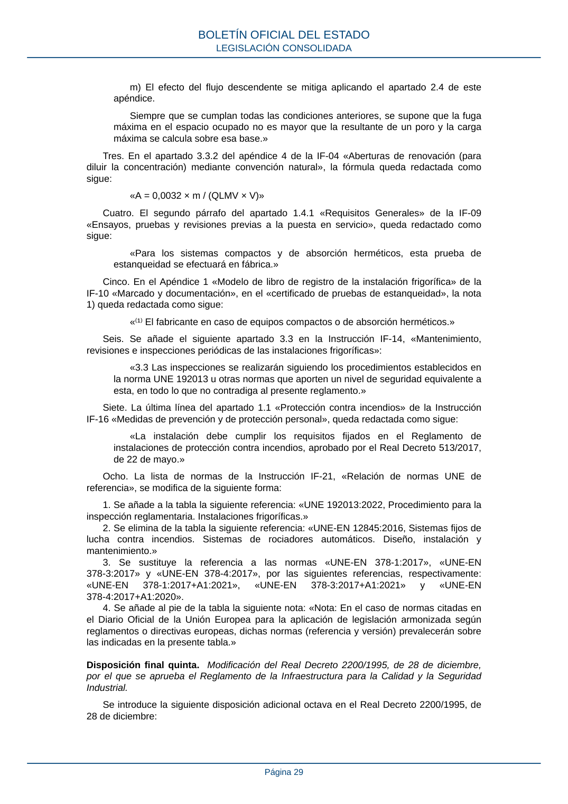

RSCIEI · Disposición final quinta. Modificación del Real Decreto 2200/1995, de 28 de diciembre, por el que se aprueba el Reglamento de la Infraestructura para la Calidad y la Seguridad Industrial. · versión 2025-04-10
SHA256: 85aa0af25d51e5b58d8975a4eefbf76d3f57a8933445cfe814ae9c4818a2e3e7 · página física 29 de 108 · métodos de encabezado
solo si están cotejados.
Formatos: Markdown · JSON de bloques · PDF p. 29 · imagen PNG
m) El efecto del flujo descendente se mitiga aplicando el apartado 2.4 de este apéndice. Siempre que se cumplan todas las condiciones anteriores, se supone que la fuga máxima en el espacio ocupado no es mayor que la resultante de un poro y la carga máxima se calcula sobre esa base.» Tres. En el apartado 3.3.2 del apéndice 4 de la IF-04 «Aberturas de renovación (para diluir la concentración) mediante convención natural», la fórmula queda redactada como sigue: «A = 0,0032 × m / (QLMV × V)» Cuatro. El segundo párrafo del apartado 1.4.1 «Requisitos Generales» de la IF-09 «Ensayos, pruebas y revisiones previas a la puesta en servicio», queda redactado como sigue: «Para los sistemas compactos y de absorción herméticos, esta prueba de estanqueidad se efectuará en fábrica.» Cinco. En el Apéndice 1 «Modelo de libro de registro de la instalación frigorífica» de la IF-10 «Marcado y documentación», en el «certificado de pruebas de estanqueidad», la nota 1) queda redactada como sigue: «⁽¹⁾ El fabricante en caso de equipos compactos o de absorción herméticos.» Seis. Se añade el siguiente apartado 3.3 en la Instrucción IF-14, «Mantenimiento, revisiones e inspecciones periódicas de las instalaciones frigoríficas»: «3.3 Las inspecciones se realizarán siguiendo los procedimientos establecidos en la norma UNE 192013 u otras normas que aporten un nivel de seguridad equivalente a esta, en todo lo que no contradiga al presente reglamento.» Siete. La última línea del apartado 1.1 «Protección contra incendios» de la Instrucción IF-16 «Medidas de prevención y de protección personal», queda redactada como sigue: «La instalación debe cumplir los requisitos fijados en el Reglamento de instalaciones de protección contra incendios, aprobado por el Real Decreto 513/2017, de 22 de mayo.» Ocho. La lista de normas de la Instrucción IF-21, «Relación de normas UNE de referencia», se modifica de la siguiente forma: 1. Se añade a la tabla la siguiente referencia: «UNE 192013:2022, Procedimiento para la inspección reglamentaria. Instalaciones frigoríficas.» 2. Se elimina de la tabla la siguiente referencia: «UNE-EN 12845:2016, Sistemas fijos de lucha contra incendios. Sistemas de rociadores automáticos. Diseño, instalación y mantenimiento.» 3. Se sustituye la referencia a las normas «UNE-EN 378-1:2017», «UNE-EN 378-3:2017» y «UNE-EN 378-4:2017», por las siguientes referencias, respectivamente: «UNE-EN 378-1:2017+A1:2021», «UNE-EN 378-3:2017+A1:2021» y «UNE-EN 378-4:2017+A1:2020». 4. Se añade al pie de la tabla la siguiente nota: «Nota: En el caso de normas citadas en el Diario Oficial de la Unión Europea para la aplicación de legislación armonizada según reglamentos o directivas europeas, dichas normas (referencia y versión) prevalecerán sobre las indicadas en la presente tabla.» Disposición final quinta. Modificación del Real Decreto 2200/1995, de 28 de diciembre, por el que se aprueba el Reglamento de la Infraestructura para la Calidad y la Seguridad Industrial. Se introduce la siguiente disposición adicional octava en el Real Decreto 2200/1995, de 28 de diciembre: BOLETÍN OFICIAL DEL ESTADO LEGISLACIÓN CONSOLIDADA Página 29
